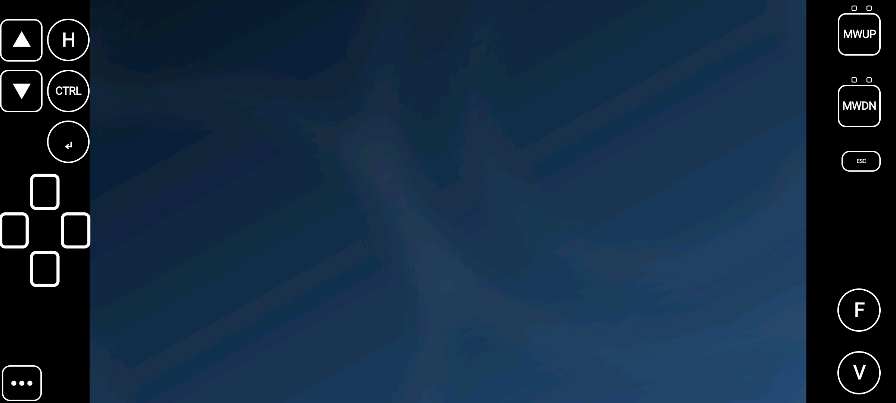

A VNC viewer for playing games on a remote PC from an Android phone · internal test, version 1.2
Thank you for testing RemotePad. This guide covers joining the test, connecting to your PC, and the on-screen controls. It takes about five minutes to read.
"App not available" or "Item not found"? Almost always the phone is using a different Google account than the one on the tester list. Switch accounts in the Play Store and open the link again. Being added to the list can also take a few minutes to take effect.
On first launch there is no address yet, so the connection fails and the settings sheet opens by itself. That is expected.
192.168.0.20)
and the Port. The default port is 5900. A server on display :1 usually uses 5901.Address and port are saved, so next time the app connects straight away.
A phone screen is wider than a 16:9 PC desktop, so black margins are left at both sides. The buttons live in those margins and never cover the picture. Touching anywhere that is not a button controls the mouse.

| Button | Sends |
|---|---|
| ▲ ▼ | Page Up / Page Down |
| H F V | The letter keys H, F and V |
| CTRL | Left Ctrl. Held while your finger is on it (see §6 for one-tap mode). |
| ↵ | Enter |
| D-pad (four squares) | Arrow keys |
| MWUP MWDN | Mouse wheel up / down, one notch per tap |
| ESC | Escape |
| ••• (bottom left) | Opens the settings sheet. Swipe it down or tap outside to close. |
This layout was made for a particular game. Layouts are a data file in the open-source project, so different key sets are possible. If your game needs other keys, tell us which.
| Gesture | Does |
|---|---|
| Drag one finger | Moves the mouse pointer (trackpad mode, the default) |
| Tap | Left click |
| Long press | Right click |
| Tap, then touch again and drag | Click-and-drag (hold the left button while moving) |
| Two-finger drag | Scroll |
With Trackpad mode turned off in settings, the pointer jumps to wherever you touch instead. This suits games played by pointing directly. Pointer and scroll sensitivity are adjustable too.
The field at the top of the sheet sends text to the PC, for a save name, a chat line or a login box. Type with the phone's own keyboard and tap Send, Send + Enter, or Enter only. The text goes out as real key presses, not a paste, so it also works inside games.
Settings marked from the next connection wait for Reconnect now. The defaults suit most setups. If the picture is too blurry, raise JPEG quality. If it is choppy on a slow network, lower it or raise Compression level.
| You see | Try |
|---|---|
| "Disconnected — retrying…" | The PC cannot be reached. Check the address and port, that the VNC server is running, and that the PC's firewall allows the port. The app keeps retrying every second. |
| "Connection failed" · authentication failed | Wrong password. The app does not retry on its own, because servers lock out clients that keep guessing. Tap Retry and enter it again. |
| "…too many failed logins…" | The server is refusing the phone for a while after failed attempts. Wait a minute or two, then tap Retry. |
| Nothing responds to touches | Check that View only is off in settings. |
| A key seems stuck down on the PC | Open and close the settings sheet. Opening it releases every key. |
Reply to the invitation email with anything you notice: what you were doing, what you expected, and what happened instead. Your phone model and the VNC server you use help a lot. Screenshots are welcome.
You can also leave feedback for testers on the RemotePad Play Store page.